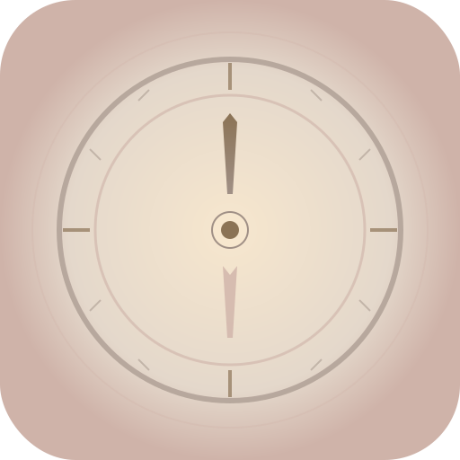

בדיקת אייקונים - מצפן פנג שואי
Favicon (64x64)
Icon 192x192

Icon 512x512
הוראות:
אם האייקונים מופיעים כאן - הם תקינים
עכשיו תוכל להוסיף את האתר למסך הבית
האייקון במסך הבית יהיה האייקון הימני (192x192)